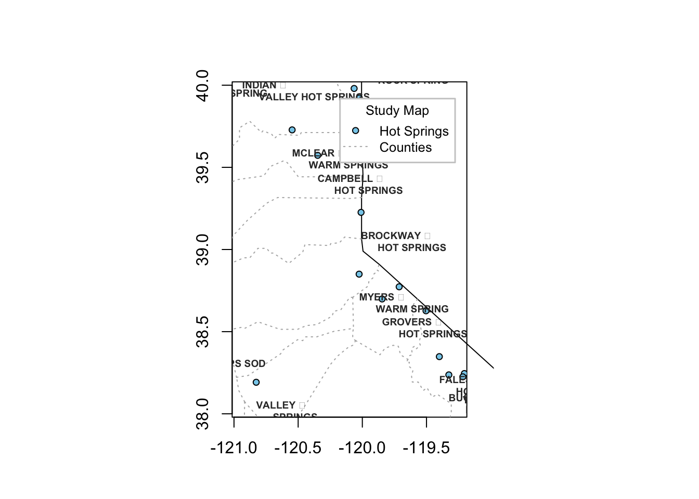
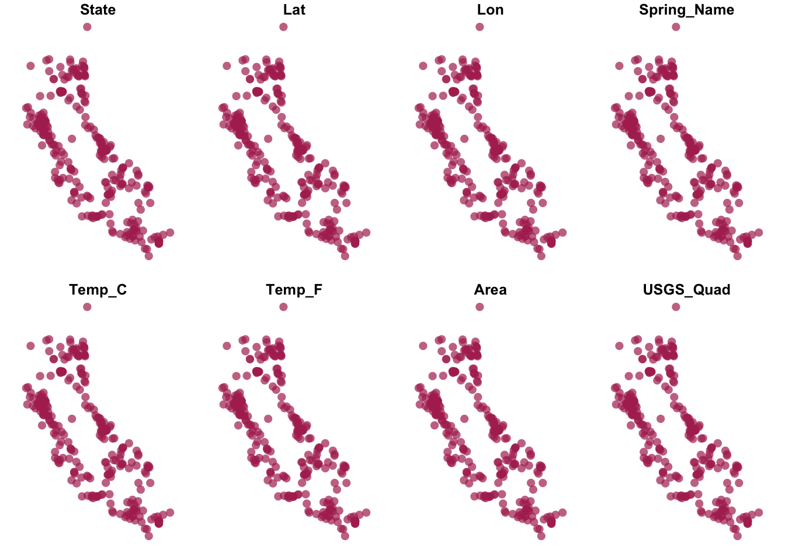
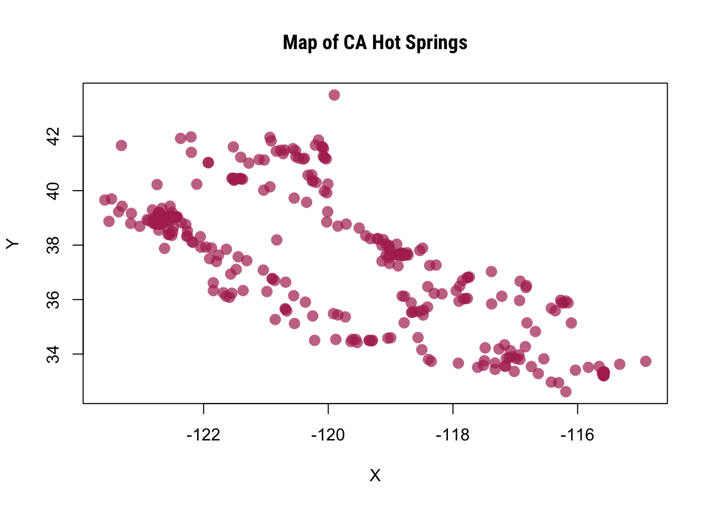
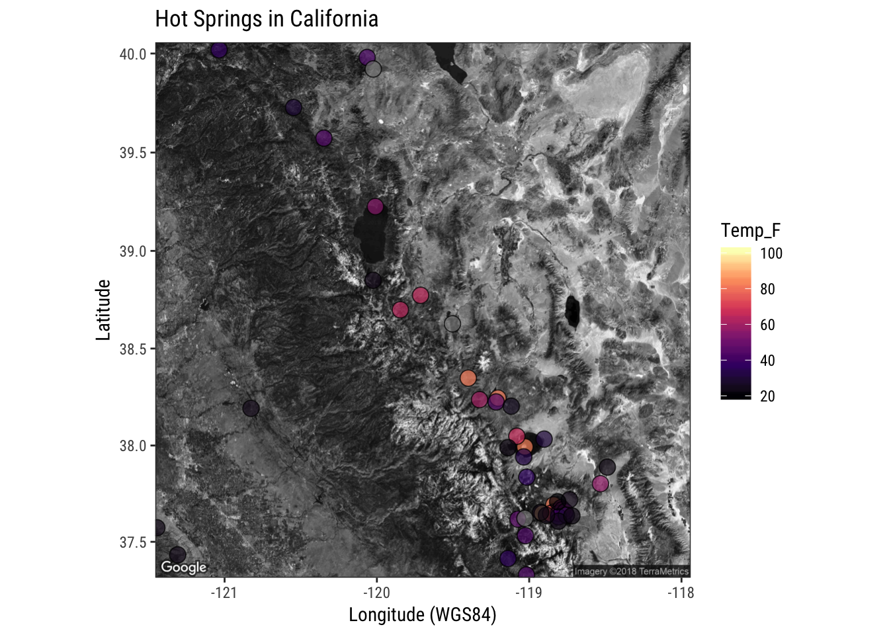

XY Data with rgdal and sf
There are loads of spatial mapping/plotting packages in R. The main two ways to read in spatial data use the rgdal package, and the sf package. I’m going to show how you can load and plot XY data using either method.
Let’s load packages first:
suppressPackageStartupMessages({
library(rgdal); # spatial/shp reading
library(readr); # reading/writing files
library(dplyr); # wrangling data/plotting
library(viridis); # nice color palette
library(sf); # newer "simple features" spatial package
library(rvest) # scraping web data
library(maps); # for map functions
library(maptools) # map data
}) Get XY Data: CA Hotsprings
The simplest type of data to plot is X/Y points. You might have a .csv lying around with site locations, or even better, a shapefile. For this example, et’s use this list of CA hotsprings. It provides names, Latitude & Longitude and water temperatures in C and F for each hotspring. I’ve already downloaded the file so you can just read the file link directly into R as follows:
df_locs<- read_csv("https://raw.githubusercontent.com/ryanpeek/mapping_in_R/master/data/hotsprings_CA.csv")## Parsed with column specification:
## cols(
## State = col_character(),
## Lat = col_double(),
## Lon = col_double(),
## Spring_Name = col_character(),
## Temp_C = col_integer(),
## Temp_F = col_integer(),
## Area = col_character(),
## USGS_Quad = col_character()
## )Optional: WebScraping the Table
If you’re interested in more info on web scraping, definitely check out some of the DSI material from Duncan (here and here). I’m going to use a method I demonstrated in a blog I wrote a few weeks ago (check it out here) which shows how to use a package called rvest to pretty quickly and easily grab data from any part of a webpage. Let’s see how it works.
- First we need to go the webpage, and then right click and select Inspect. I’m using Chrome as my browser here.
- Then in the upper right hand box, hover/scroll around until the table part of the webpage is highlighted. Right click on that line and select “Copy > Copy Xpath”.
- Read in with the code below!
library(rvest)
url <- "http://www.hotspringsenthusiast.com/California.asp"
df <- url %>%
read_html() %>%
## NOW THE XPATH WE COPIED!
html_nodes(xpath='/html/body/table') %>% # use inspect and xpath with chrome
html_table()
df_locs <- df[[1]] # reads in as a list, so we are just eliminating the list and making this a dataframe
# Great! Let's add colnames and clean up a bit:
dim(df_locs)
# set_names from purrr package is nice for adding col names
df_locs <- df_locs %>% set_names(nm = c("State", "Lat", "Lon", "Spring_Name", "Temp_C", "Temp_F", "Area", "USGS_Quad"))
# Make the temp data numeric
df_locs <- df_locs %>% mutate_at(.vars = c("Temp_C", "Temp_F"), .funs = as.numeric)
# save as a CSV!
# write_csv(df_locs, path = "data/hotsprings_CA.csv")
Make XY “Spatial”: rgdal
Now we have some data, let’s show how to read it in as spatial data using the rgdal pipeline. This requires creating a SpatialPointsDataFrame. We’ll use the extension sp for data of this type.
# read in data
df_locs <- read.csv("https://raw.githubusercontent.com/ryanpeek/mapping_in_R/master/data/hotsprings_CA.csv") # or as file: data/hotsprings_CA.csv
head(df_locs) # wait...what's up with Lon?## State Lat Lon Spring_Name Temp_C Temp_F
## 1 CA 38.802 122.810 THE \n GEYSERS 214 101
## 2 CA 38.767 122.748 LITTLE \n GEYSERS 210 99
## 3 CA 41.534 120.078 HOT \n SPRINGS (SURPRISE VALLEY) 208 98
## 4 CA 36.045 117.769 COSO \n HOT SPRINGS 207 97
## 5 CA 41.670 120.206 LAKE \n CITY HOT SPRINGS 207 97
## 6 CA 36.036 117.802 DEVILS \n KITCHEN 207 97
## Area USGS_Quad
## 1 SANTA ROSA THE GEYSERS 7.5
## 2 SANTA ROSA (WHISPERING PINES 7.5)
## 3 ALTURAS CEDARVILLE 15
## 4 DEATH VALLEY HAIWEE RESERVOIR 15
## 5 ALTURAS CEDARVILLE 15
## 6 DEATH VALLEY HAIWEE RESERVOIR 15df_locs$Lon <- df_locs$Lon * -1
# make CDEC data sf object (spatial):
df_locs_sp <- SpatialPointsDataFrame(df_locs[,c(3,2)],df_locs[,-c(3,2)])
# no projection:
proj4string(df_locs_sp) # NA## [1] NA# set projections
utms <- CRS("+init=epsg:32610") ## more detailed def using the EPSG code
utms # more detail## CRS arguments:
## +init=epsg:32610 +proj=utm +zone=10 +datum=WGS84 +units=m +no_defs
## +ellps=WGS84 +towgs84=0,0,0lats84<-CRS("+init=epsg:4326") # set the default for lat/longs
lats84## CRS arguments:
## +init=epsg:4326 +proj=longlat +datum=WGS84 +no_defs +ellps=WGS84
## +towgs84=0,0,0# Project our data
proj4string(df_locs_sp)<-lats84
proj4string(df_locs_sp) # looks like it matches!## [1] "+init=epsg:4326 +proj=longlat +datum=WGS84 +no_defs +ellps=WGS84 +towgs84=0,0,0"# if you want to reproject (say to UTM):
df_locs_sp_utm<-spTransform(df_locs_sp, utms)
proj4string(df_locs_sp_utm) # double check data to make sure it has CRS## [1] "+init=epsg:32610 +proj=utm +zone=10 +datum=WGS84 +units=m +no_defs +ellps=WGS84 +towgs84=0,0,0"Make XY “Spatial”: sf
Here’s how to do the same thing using the sf package.
# make data sf object:
df_locs_sf <- st_as_sf(df_locs,
# coords = c("Lon", "Lat"), # can use numbers here too
coords = c(3, 2), # can use numbers here too
remove = F, # don't remove these lat/lon cols from df
crs = 4326) # add projection (this is WGS84)Ok! So we’ve pulled in a list of XY locations. These could have come from field work, a GPS device, whatever. We projected this dataset into WGS84 which is fairly universal (and easily plotted in things like googlemaps, leaflet, Google Earth, etc.).
Plotting XY Data
Let’s plot the data. I’ll show how to do the same map using both sf and rgdal. Let’s introduce map and maptools packages, which provide some nice functionality.
Plotting with Spatial (rgdal) Data
# need to have maps and maptools loaded here
# add States
map("state",region=c('CA'))
map.axes()
# add counties
map("county",region=c('CA'),boundary=FALSE, lty=3, add=T, col="gray70")
# add our hotspring point data from earlier: sp version
points(df_locs_sp, cex=0.8, pch=21, bg="skyblue")
# Cool! Let's zoom in a bit and add a legend
map("state",region=c('CA'), xlim = c(-121,-119.2), ylim=c(38,40))
map.axes()
map("county",region=c('CA'),boundary=FALSE, lty=3, add=T, col="gray70",
xlim = c(-121,-119.2), ylim=c(38,40))
points(df_locs_sp, cex=0.8, pch=21, bg="skyblue")
# add labels (using trial and error for placement)
text(df_locs_sp, labels=as.character(df_locs_sp@data$Spring_Name), col="gray20",
cex=0.6, font=2, offset=0.5, adj=c(0,2))
# add a plot legend
legend("topright", border = "gray80", box.lwd = 1.5,
box.col = "gray80",
legend=c("Hot Springs", "Counties"),
title="Study Map", bty="o", inset=0.05,
lty=c(-1,3), pch=c(21, NA), cex=0.8,
col=c("black", "gray70"), pt.bg=c("skyblue", NA))
Plotting with sf Data
Can we do the same thing with sf data? Nope! You’ll get this error:
Error in data.matrix(x) :
(list) object cannot be coerced to type 'double'Baseplotting functions work with sf, but be aware it will plot a facet or map for column of data in your dataframe. Avoid that by specifying st_coordinates().
# the simplest plot with sf data:
plot(df_locs_sf, pch=16, col=adjustcolor("maroon", alpha=0.7), cex=1.5) #YIKES
# this is better
plot(st_coordinates(df_locs_sf), pch=16, col=adjustcolor("maroon", alpha=0.7), cex=1.5)
graphics::title("Map of CA Hot Springs")
Plotting with ggplot and ggmap
Alternatively, we can use ggplot2 instead. This is where sf objects are really nice. They fit well within the ggplot framework because they are simply dataframes with a spatial list-column. You can plot XY data as a regular layer, or you can use the geom_sf function.
# fancier ggplot w google background plot:
library(ggmap) # need this package
location=c(-119.7,38.7) # set the center of the map
# set the background map up
map1 <- get_map(location=location, crop = F,
color="bw",
maptype="satellite",
source="google",
zoom=8)## Map from URL : http://maps.googleapis.com/maps/api/staticmap?center=38.7,-119.7&zoom=8&size=640x640&scale=2&maptype=satellite&language=en-EN&sensor=falsesitemap <- ggmap(map1) # start a ggmap... like calling ggplot()
# and let's make our nicemap
nicemap<-
sitemap +
geom_point(data=df_locs_sf, aes(x=Lon, y=Lat, fill=Temp_F), pch=21, alpha=0.7, size=4)+
scale_fill_viridis_c(option = "A")+
labs(x="Longitude (WGS84)", y="Latitude",
title="Hot Springs in California") +
theme_bw(base_family = "Roboto Condensed") # change this to sans if it doesn't plot
nicemap## Warning: Removed 255 rows containing missing values (geom_point).
# To save plot
# ggsave(filename = "./figs/site_map_ggplot.png", width = 8, height = 6, units = "in", dpi = 300)